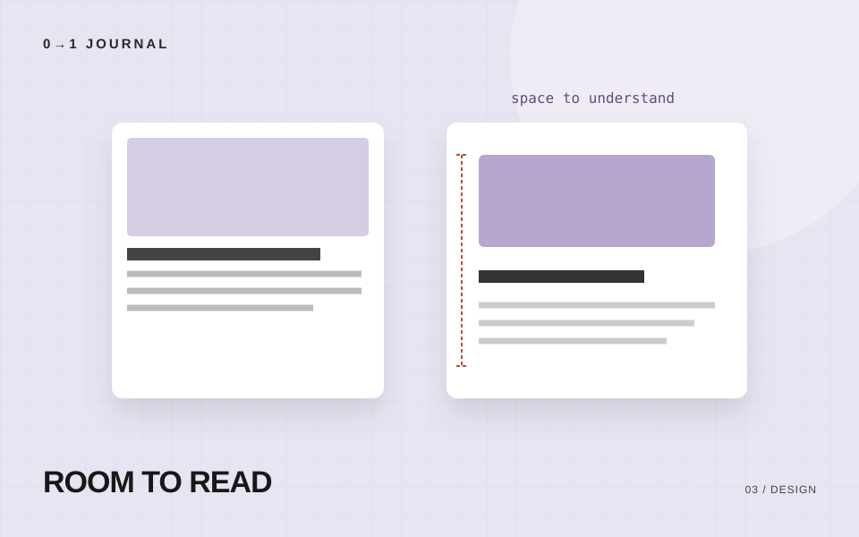

画面がなんとなく読みにくい。でも、何を直せばよいか分からない。そんなときは、色や装飾を足す前に、情報と情報の距離を見てみましょう。
近いものを、一つのまとまりにする
商品名と価格、見出しと説明文。関係のある情報は近づけ、別の話題との間には少し広い余白を取ります。
たとえば、カード内の見出しと本文の間隔が、カード同士の間隔より大きいと、どこまでが同じ話なのか分かりにくくなります。
間隔の候補を少なくする
余白を毎回違う数値にすると、調整する場所が増えます。最初は小・中・大の3段階くらいから始めても構いません。
.article-card {
padding: 24px;
}
.article-card h2 {
margin: 0 0 12px;
}
.article-list {
display: grid;
gap: 32px;
}
数値そのものに正解があるわけではありません。使っている文字の大きさや、画面の幅に合わせて調整してください。
見出しの上と下を変える
見出しの上には話題が切り替わる余白を、下には本文とつながる余白を設けます。上下を同じ値にするより、まとまりが伝わりやすくなることがあります。
長い文章では、段落の間も見てみましょう。行間と段落間がほとんど同じだと、話の切り替わりを見つけにくくなります。
スマートフォンでも確認する
PCでちょうどよかった余白が、そのままスマートフォンでも適切とは限りません。左右の余白を確保しつつ、本文の幅が狭くなりすぎないようにします。
見出しが意図しない位置で分かれたり、ボタンの文字が詰まったりしていないかも確認しましょう。
今日の小さな課題
自分の制作物からカードを一つ選び、余白だけを変えた案を作ってください。変更前後を同じ画面幅で並べ、「どの情報が同じまとまりに見えるか」を比べます。
記事についてのお問い合わせ
← 記事一覧に戻る記載内容へのご質問や訂正のご連絡は、hello@junkbranding.comまでお願いします。